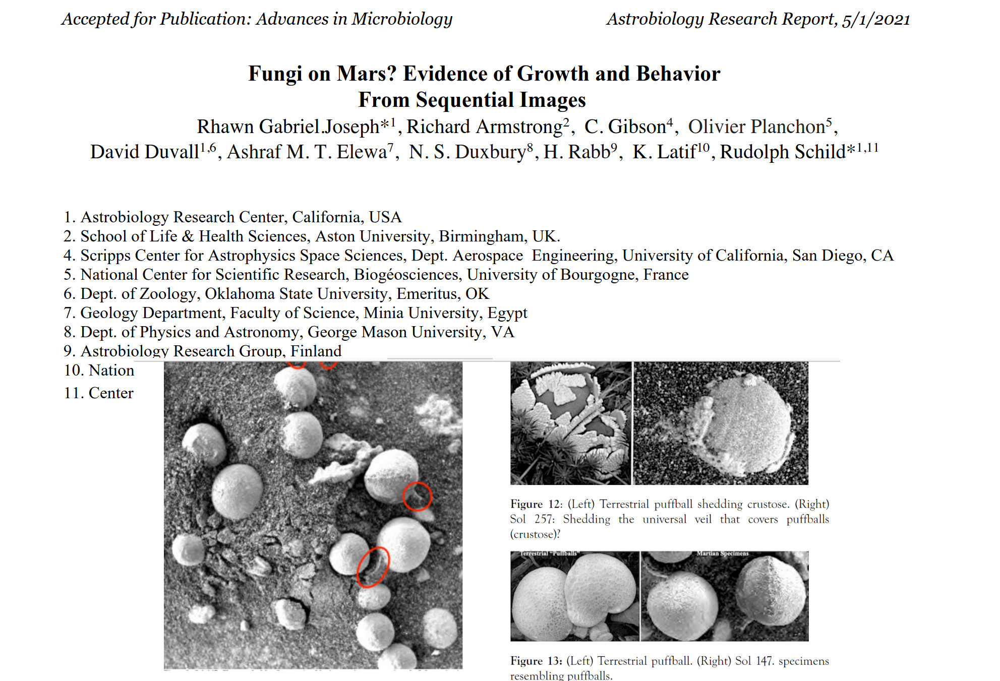

Life Detection

A description of "fungus-like Martian specimens" by Rhawn Joseph et al.
2021. This was uploaded to ResearchGate as a preprint with the header "Accepted for Publication: Advances in Microbiology", though it apparently was not. It does seem to have been 'published', likely without the authors' participation, by 'Fungal Genomics & Biology', now only accessible on the Internet Archive's Wayback Machine.